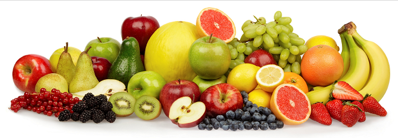

Nutrition

Smartest Loser Criteria
NUTRITION: Participants need to eat a combined total of 5 servings of fruits and vegetables (1 serving = 1 cup) and 4 small meals per day. Eating fruits and vegetables provide health benefits such as reducing the risk of stroke, heart disease, type 2 diabetes, obesity and certain cancers. Eating smaller meals (350 - 500 calories) more often throughout the day can help maintain your metabolism and lean muscle mass.
WATER: Participants need to drink at least 64 ounces of water per day. Water is your body’s principal chemical component, Every system in your body depends on water. Lack of water can lead to dehydration, drain your energy and make you tired.
Weight Management Programs
Get up to $150 back when you participate in an approved weight management program.
Download the PDF
Food Tracking
Need a way to make sure you're getting the right intake for your day? Track your food or check your caloric intake with these suggested apps:
FreeDieting.com will help you to discover what your ideal daily calorie range is for fat loss (but don't use the 'extreme' number). Then, keep your daily intake in that range. Remember—too few calories can actually slow your metabolism and prevent weight loss. And don't forget that what you eat is just as important as how much you eat. Quality of calories matter!
Smartest Loser Tips
A few extra tips and ideas from the wellness team.
- Smartest Loser Tips
- How Big is a serving of Food
- Use this link to find a Nutritionist close to your preferred location.
 Questions?
Questions?
If you have any questions, please email your Wellness Advocate at: wellness@emoneyadvisor.com